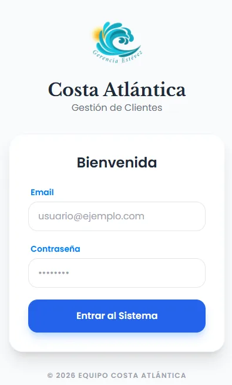
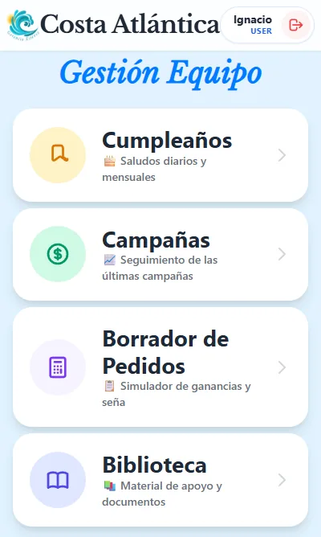
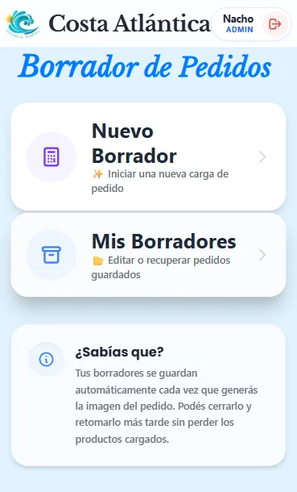
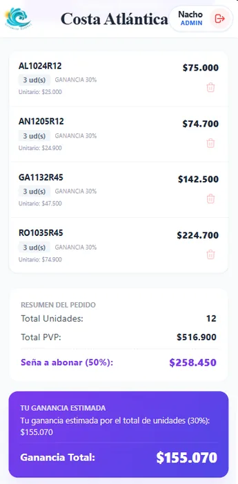

Sistema CliP26
Sistema ligero de gestión operativa y comercial para revendedores de venta directa, diseñado con enfoque Mobile-First para operar de forma ágil desde el celular sin depender de una PC.
Problema Resuelto
Pérdida de pedidos y errores manuales de cálculo en fuerza de venta móvil.
Solución de Ingeniería
SPA Mobile-First ultraligera con backend PHP/MySQL y exportación formateada a WhatsApp.
Impacto Operativo
-70% de tiempo en consolidación de pedidos semanales y 0% margen de error en señas.
El Desafío & Objetivo
Desarrollar una herramienta accesible y rápida desde dispositivos móviles que permita a los revendedores gestionar clientes, pedidos recurrentes y cálculos de comisiones sin fricciones, eliminando planillas manuales y reduciendo errores en la toma de pedidos de catálogo.
Funcionalidades Críticas
-
Seguimiento de Cumpleaños: Vista inmediata de cumpleaños del día, próximos 5 eventos y calendario mensual para fidelización de clientes.
-
Borrador de Pedidos: Conexión dinámica a base de datos con autocompletado y validación estricta de códigos y listas de precios.
-
Gestión de Versiones: Registro de borradores editables preparados para envío directo por WhatsApp con formato estructurado.
-
Cálculos Automáticos: Determinación exacta de señas obligatorias, ganancias escalonadas por volumen de unidades y aplicación de descuentos del 50%.
VISTA DE PANTALLAS
Capturas del Sistema en Producción
Diseño móvil pensado para carga instantánea y operación con una sola mano.

Acceso Seguro

Menú de Usuario

Borradores Activos

Cálculo de Pedido